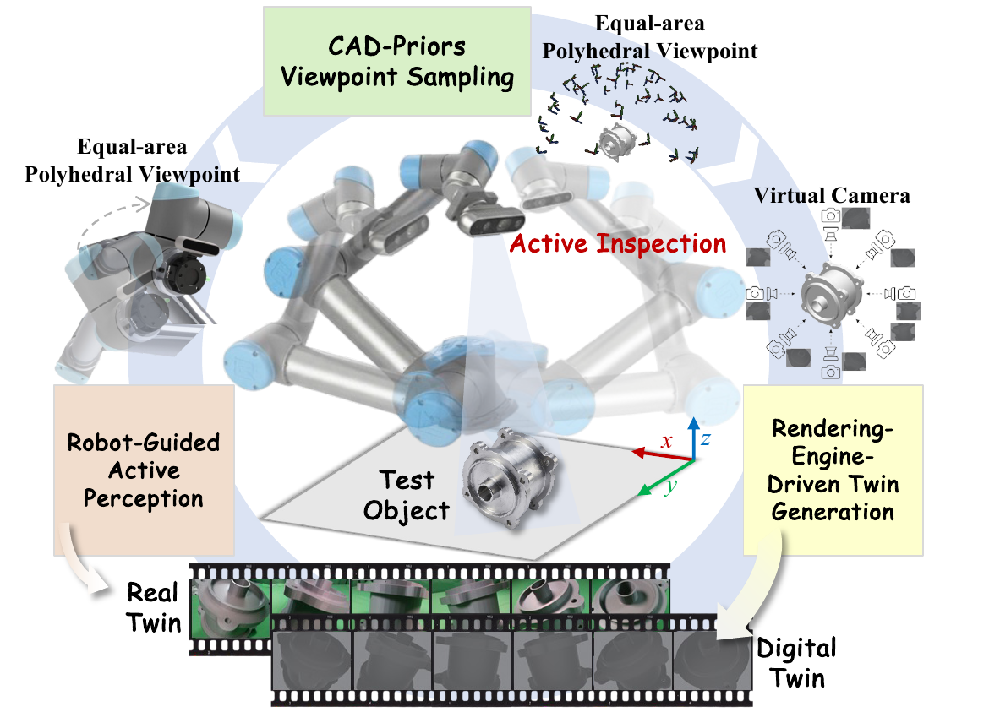
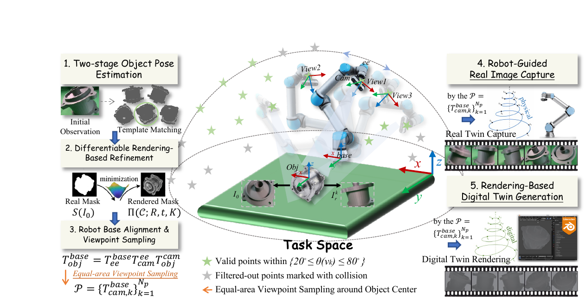
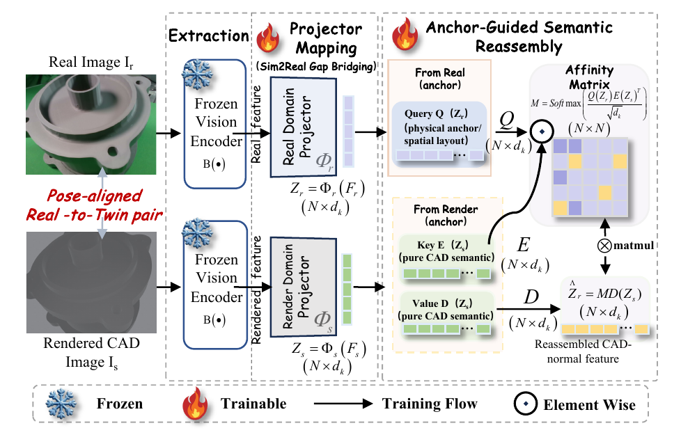
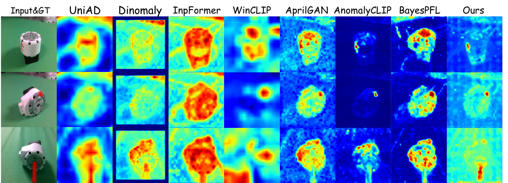

Abstract
The deployment of zero-shot anomaly detection in embodied industrial inspection is severely bottlenecked by its reliance on passive, fixed-viewpoint 2D imagery. We introduce Real-to-Twin Anomaly Detection, a task that evaluates physical observations directly against geometrically matched CAD Digital Twins. To tackle this task, we propose AVATAR, a framework designed to learn robust semantic alignment between Real and Digital Twins.
By bridging benign Sim2Real domain gaps using only defect-free pairs, AVATAR transforms CAD priors into dynamic, anomaly-free references. This formulation enables the model to localize diverse anomalies in a zero-shot manner as unalignable deviations, eliminating the need for defect annotations.
Real-to-Twin Inspection Pipeline

Real-to-Twin Data Acquisition

AVATAR Framework
AVATAR learns twin-anchored representation calibration from normal real-render pairs. The real image acts as a spatial anchor, while the rendered Digital Twin provides an anomaly-free semantic dictionary.
During inference, regions that cannot be reassembled from the clean CAD dictionary produce high residual responses, yielding zero-shot anomaly localization maps.

Results

BibTeX
@article{liu2026avatar,
title={Towards Active Real-to-Twin Inspection: A New Paradigm for Zero-Shot Anomaly Detection},
author={Liu, Jiaxuan and Cao, Yunkang and Chen, Yufeng and Li, Chunyang and Du, Yuhuan and Zhang, Hui},
journal={arXiv preprint},
eprint={2605.25407},
archivePrefix={arXiv},
primaryClass={cs.CV},
doi={10.48550/arXiv.2605.25407},
url={https://arxiv.org/abs/2605.25407},
year={2026}
}